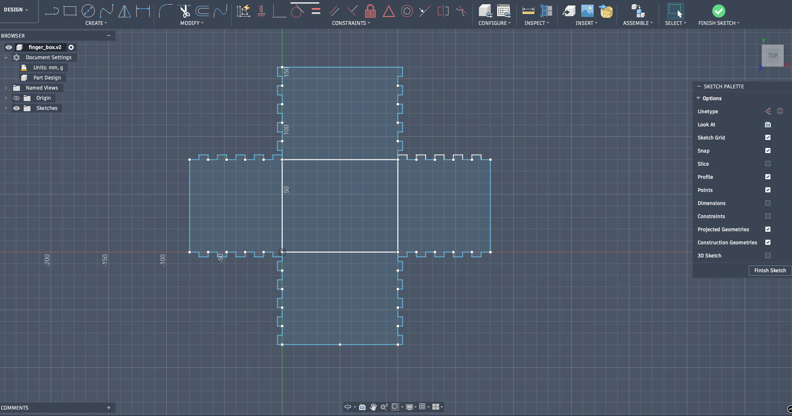
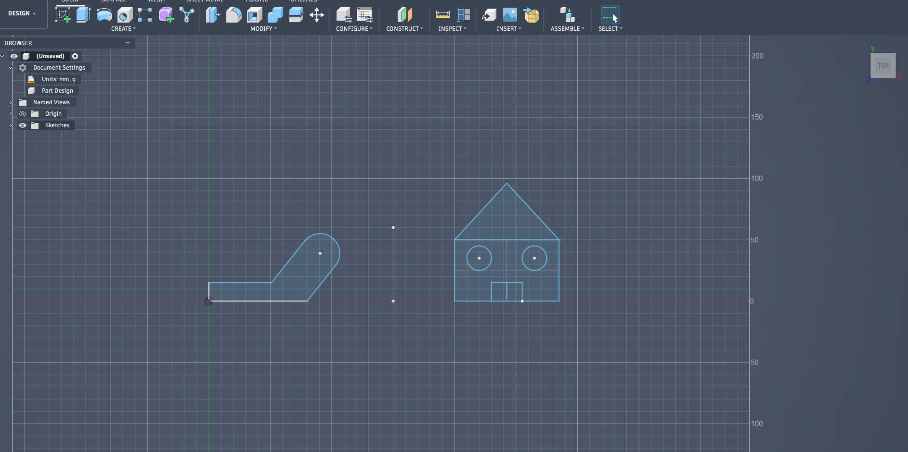
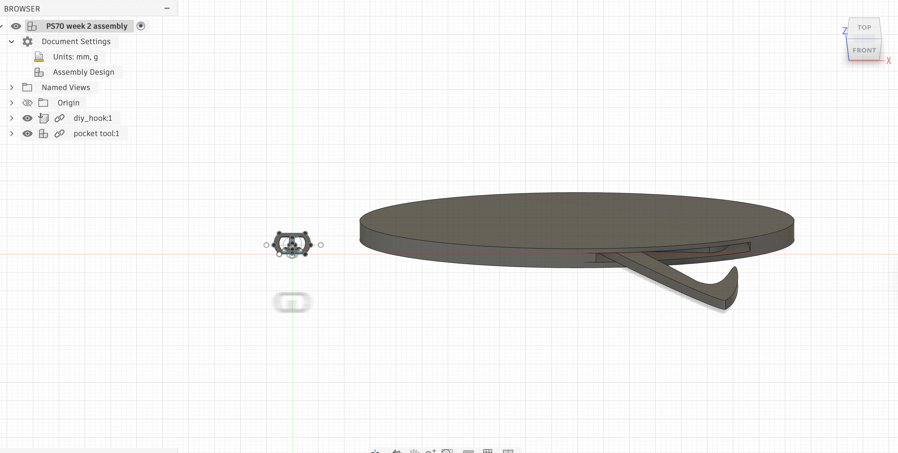
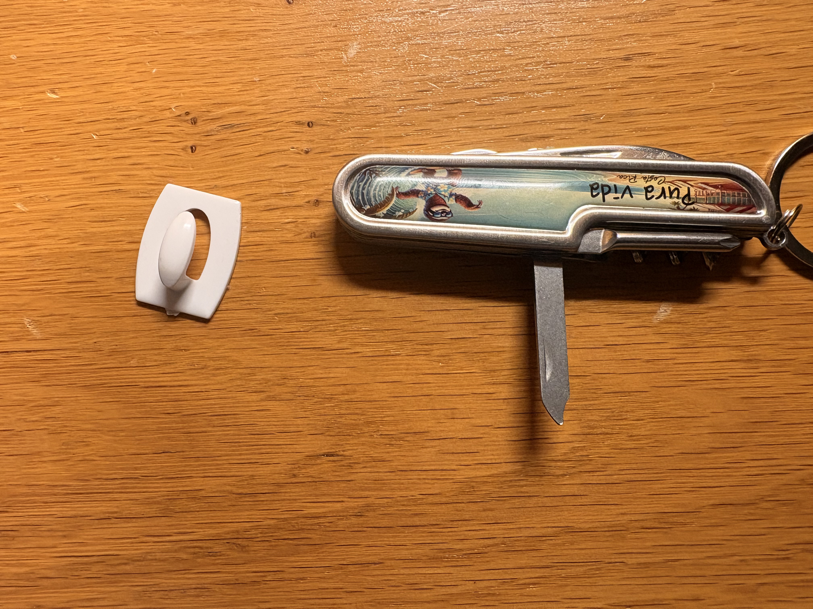

<div class="textcontainer">
<p class="margin"> </p>
<h3>Week 2: 2D Design & Cutting</h3>
<p class="margin"> </p>
<div class="flexrow">
<a id="btn" href="./PS70 WK2 Files.zip" download>Download Button
</a>
</div>
<p class="margin"> </p>
<h4>Assignment 1: Make a Box</h4>
<br>
Went into fusion and modeled my finger box. Important notes were to use the rectangular patternt tool to create the fingers, and try to contrain as many of the aspects of the box as possible.
Constraining would help to change the size of the box, which I tried to then do and got some errors. Happy that I was able to get a bit more familiar with the platform. I was able to add my initials to the outside of the box using the engrave function on the laser cutter. Took two tries to actually get a functional box
(first time forgot to use score, for the base of the box)
<br>

<br>
<img src="IMG_6591.png" alt="placeholder for you about me image" width="640" height="480">
<br>
<h4>Assignment 2: Fusion 360 Tutorial</h4>
Used the Youtube Fusion tutorial to replicate the sketch they made and to also make a house beside it.

<br>
<h4>Assignment 3: Fusion Modeling</h4>
Utilized Fusion to make a small hook that you hang on a wall using a command strip. Beside it is a pocket tool, where I modeled one of the hook/finger file functions.
I was able to use combine/cut and ellipse tools to create the hook shape and add it to the overall casing.

<br>

</div>